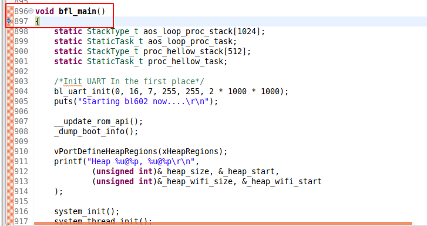

3. Freedom Studio¶
本文档介绍Freedom Studio的使用。
3.1. 导入工程¶
首先启动
Freedom Studio，打开工具栏上的File > import，选择General菜单下的Existing Projects into Workspace选项导入工程。


3.2. Debug¶
首先让板子跑起来，使用快捷键
F11启动 Debug，Freedom Studio会先编译工程(注意使用快捷键时确认使用的.launch文件名是bl_iot_sdk_debug_freedom_studio.launch，可以通过工具栏 Run > Debug As > 进行查看)使用快捷键
F8resume一下，可以看到程序停在void bfl_main()主函数处，此时可以点击下图中的3个按钮。其含义分别为第一个Step Into（F5） 单步执行，遇到子函数就进入并且继续单步执行；
第二个Step Over （F6）在单步执行时，在函数内遇到子函数时不会进入子函数内单步执行，而是将子函数整个执行完在停止，也就是把子函数整个作为一步；
第三个Step Return（F7）在单步执行到子函数内时，用Step Return就可以执行完子函数余下部分，并返回上一层函数。


可以在
c代码窗口最左边橙色条处双击增加、删除断点。

还可以通过查看右边的
Disassembly窗口查看对应的汇编（该窗口没有的话可以通过最上方工具栏Window > show view > Disassembly添加）。